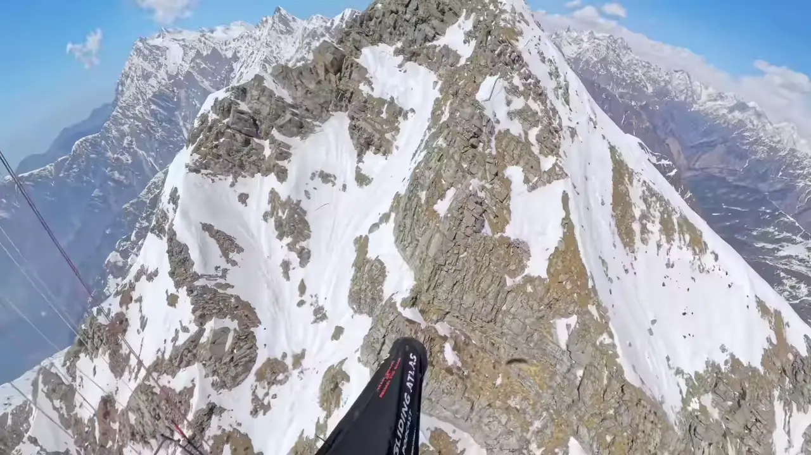
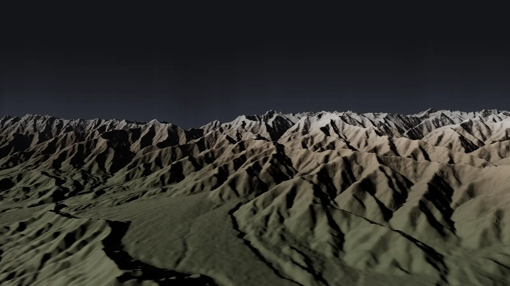
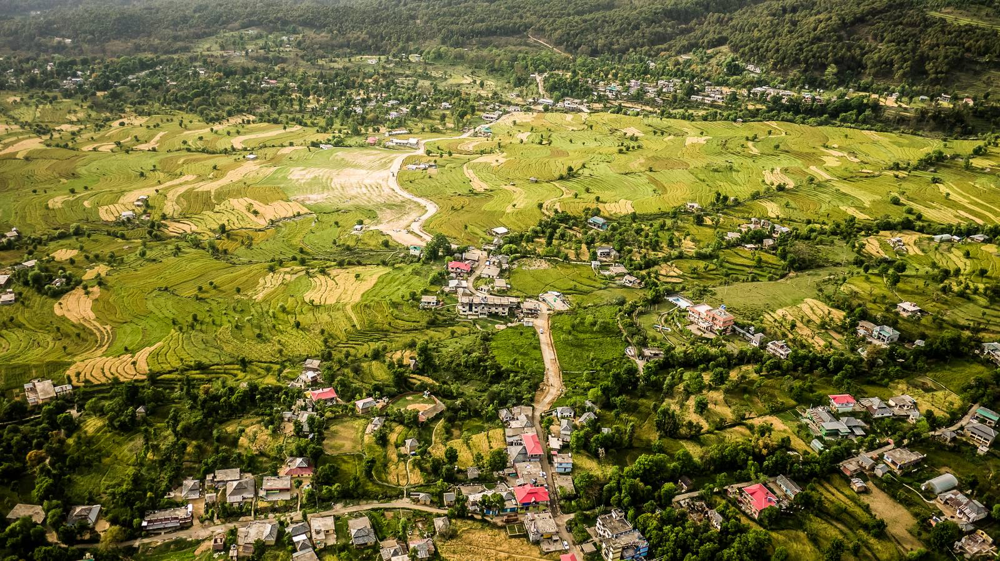
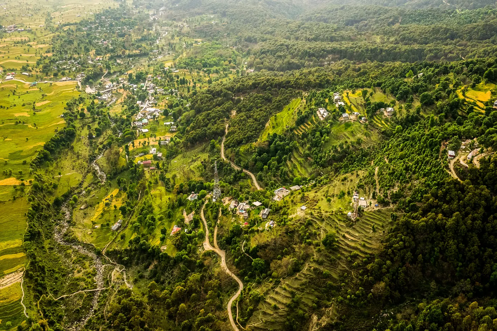
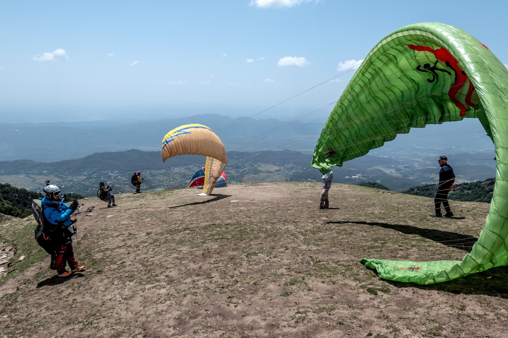
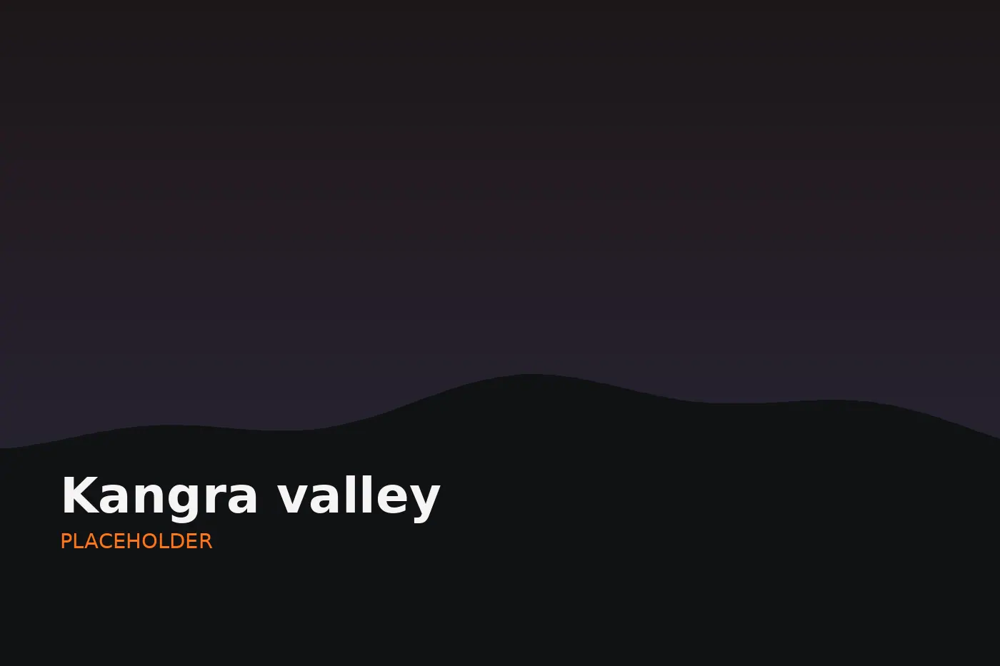
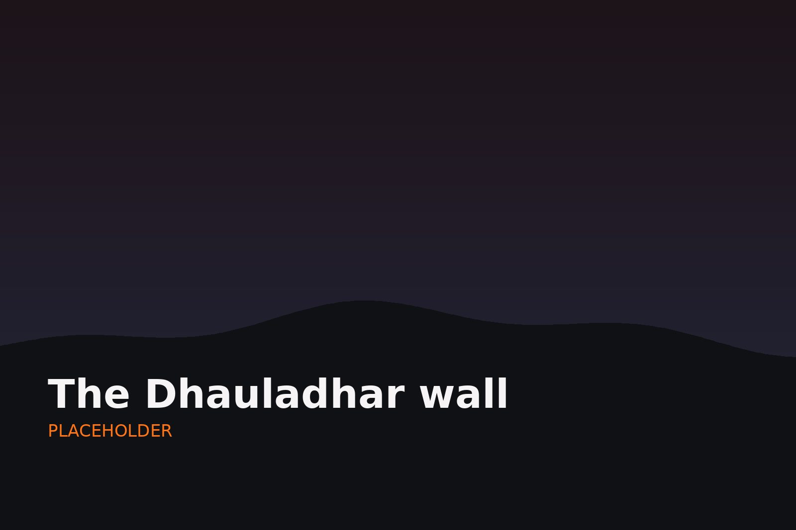
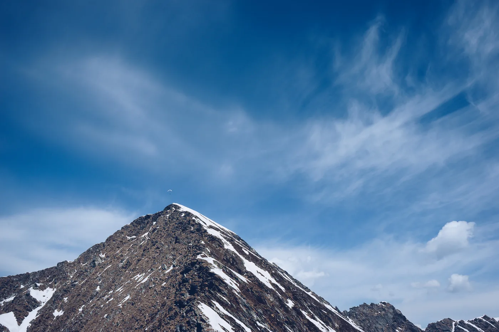
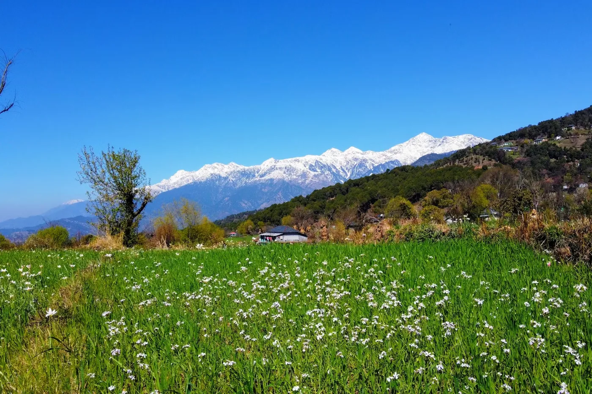
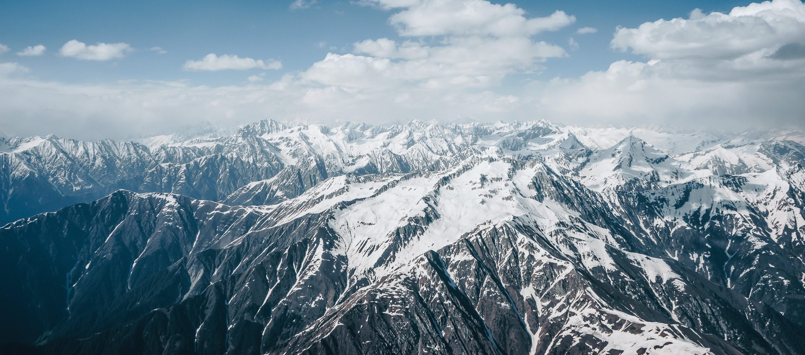

01
India Tour 1
to 2026
Guaranteed to run6 places
Per pilot£1,100
Hold a placeBig Mountain Flying. Ten days on the Dhauladhar, the wall of the Himalaya above Bir.
Big Mountain Flying from Bir Billing
launch from the meadow at Billing,
climb the knobs of the Dhauladhar and run west towards Dharamshala,
then turn for Bir with the light going.
3 to 3.6 km on the front range,
October to November.
Our Himalayan expedition delivers an aerial experience that makes you soar over landscapes shaped by time and legend, you get to drift over ancient monasteries while exploring your limits in thin air. It's a journey that stirs the soul. Bir is where it starts: one launch at Billing, a landing field at the edge of town, and a front range that pilots have been flying out and back along since the 1980s.
Every flying day starts on the meadow at Billing, above Bir. The launch is almost always nil-wind, so a clean forward launch without help from the breeze is the one skill to arrive with,
The plan follows the conditions, not a timetable. On the ground, Bir has a kilometre of road with around a hundred restaurants, trails to walk, hot springs, and monasteries where you can sit in on the chanting.
Eddie Colfox remembers late October air turning too stable to climb much above 2,800m. Now the monsoon lingers into the first week of October, and the air stays unstable enough to climb well over 3,000m right into November. Leaving Bir in mid November, he was at 3,600m on the front ridge and 5,800m deep in the back ranges.
Eddie Colfox, India episodeAutumn is the season. Eddie Colfox puts the start of good flying at around 10 October now, later than it used to be, and it runs well into November. Jigish Gohil, who lives in Bir, says autumn is when almost everyone comes, because the flying is consistent nearly every day. Spring flies too, but it is stronger and far quieter. On the day, Jigish's own site, paraguide.in, runs a live weather station for Bir Billing.
Jigish Gohil, Bir episodeThe flying in front of the takeoff is the textbook part: landing fields all along the valley, a road never far away, and griffon vultures marking the climbs. If the day goes wrong, you land, take a retrieve and go home.
Most days end back in Bir. When they do not, the pilots' WhatsApp and Telegram groups share taxis, usually four pilots to a small car, and the same network gets everyone up the hill in the morning.
Behind the takeoff is a spine, and past it everything steps up at once: altitude, thermal strength, roughness and cold, by about a third in Eddie Colfox's reckoning. That is a later step, not a first week one.
Autumn at Bir drew around 800 visiting pilots in 2023, against about 200 when Jigish Gohil first arrived. We brief for traffic every morning and keep the group together on the radio.
We don’t see our clients as clients, we see them as friends and fellow dreamers. Pilots, who, like us, have made exploring new horizons a priority. That means we’ll leave no thermal unchecked in our quest to help you achieve a personal best or simply experience the flight of a lifetime
We know how it feels to Touch The Sky With Glory and It’s our dream to be able to share that with you

Aninder's own Bir footage, three seconds along the Dhauladhar. The scroll moves it forward and back. Nothing plays on its own.

In from 69 km wide over the Kangra valley, down to Billing, west along the front to Dharamshala, back east to 360, and up over the back. The scroll flies it, or take the controls and go where you like.
One launch, one landing field, and a front range that works for tens of kilometres either way. The tour follows the conditions rather than a schedule; these are the shapes the days tend to take.
about 2,400m
The standard day, and the line Eddie Colfox would send a newer pilot on: west along the front range to Dharamshala and home, with big fields to land in and easy retrieves the whole way. In his telling, pilots were already flying it out and back in 1988. Hear him on it.
West, 80 to 90 km out and return
With Dharamshala done, his next step is to turn back east past the takeoff to 360 and then home again. Same front range, same landing options, more of it.
East, the bigger day
Behind Billing is a spine, and past it the big mountains: Barabangal, the run to Manali and beyond. Jigish Gohil's test for going is a couple of hundred hours, an SIV course, and the kit and fitness for a night out and a long walk. His test in full.
North, not a first week line








The ground is open 19 m terrain data (AWS Terrain Tiles, Mapzen Terrarium, from SRTM and other open sources) drawn live as relief, flown by the scroll or moved by hand; the pins are the Bir waypoints pilots fly with (Indian XC League) and the towns are placed from GeoNames (CC BY 4.0). A photograph marked near is placed from its caption, not from a fix. The flights drawn are real tracklogs scored by the XContest rules: the distance is the scored route, the dashed line is that route, and the average speed is the scored distance over the time in the air. The landmark photographs are from Wikimedia Commons, each named with its author and licence where it appears.
Two departures of ten days and nine nights in Bir, six pilots on each.
to 2026
Guaranteed to run6 places
Per pilot£1,100
Hold a placeto 2026
Guaranteed to run6 places
Per pilot£1,100
Hold a placeHold a place sends an enquiry for that departure. Both departures are guaranteed to run: we will not cancel either one for low numbers. Because both are less than 120 days away, the full £1,100 is due when you book, as set out in our booking terms.
Who guides
Aninder took his first tandem flight as a child in the foothills of the Himalaya, and has been flying for more than ten years since. He founded Paragliding Atlas in 2023, has flown Bir himself, and hosts the podcast, including the two Bir episodes this page is built on.
Gurpreet has flown since 1993 and was the first Indian to hold a BHPA instructor licence. He founded the PG Gurukul school in 2002, now based at Bir, which in 2025 became the first paragliding school in India accredited by the Aero Club of India. He was the first Indian on an international open-class podium, has flown 69 international events, and helped draft India's paragliding safety rules and pilot ratings. In 2026 the FAI awarded him the Paul Tissandier Diploma.
One guide to every three pilots, never more.
[to supply]
Eddie Colfox has run trips from Bir since 2007. He talks through how the season has shifted, the routes along the front range, and what changes the moment you go over the back.
The ten that come up every time. If yours is not here, ask it on the call. More on Bir from our guests in Flying Abroad, in the knowledge base.
Autumn. Eddie Colfox, who has flown Bir since 2006, puts the start of good flying at around 10 October now, because the monsoon often lingers into the first week of the month, and the air stays unstable enough to climb over 3,000m well into November. Our two 2026 departures, 21 to 30 October and 3 to 12 November, sit inside that window. Eddie on the season.
IPPI 2 or equivalent, the same as our Kenya tour, and you should be flying autonomously: launching, thermalling, deciding and landing on your own. Above all, practise nil-wind launches before you come, because Billing rarely gives you help from the breeze. Eddie Colfox counts a 100 to 300 hour pilot as still a beginner here, and his advice is to fly with an experienced group.
Big Mountain Flying costs £1,100 per pilot for the ten days, the same on either departure, guided by Aninder Singh and Gurpreet Dhindsa at one guide to every three pilots. The price covers guiding, daily transport up to Billing and back, retrieves and takeoff fees. International flights, your visa and insurance are yours to arrange. Both departures are guaranteed to run.
Fly into Delhi, then take a domestic flight to Dharamshala, listed as Kangra or Gaggal, and a taxi of about two hours to Bir. Jigish Gohil, who lives in Bir, rates the overnight Volvo bus from Delhi as the cheapest and easiest option, with seats that recline far enough to sleep. Chandigarh and Amritsar airports work too, with a longer drive at the end.
Most nationalities can apply online for India's e-Tourist visa, but not all, so check yours on the official portal. Apply at least four days before you arrive; with our first departure on 21 October, it is not something to leave late. Since October 2025 every foreign visitor also files a free online e-Arrival Card in the 72 hours before flying.
Your own certified wing, a harness with back protection, reserve, helmet, vario or GPS, and a radio. Bring a wing you can relax on rather than your hottest: Eddie Colfox's advice is good equipment you feel comfortable on. It is warm in the valley and freezing at cloudbase, so pack a down jacket and gloves you have already tested in easy air. The full list is below.
Check before you pack. Some satellite communicators are not technically legal in India, and the advice online has not all caught up. Eddie Colfox still counts some form of transmitter as essential safety equipment and says so openly, but the rules are yours to follow. Ask us about your device when you book, so you find out before you travel rather than at customs.
Travel insurance that covers paragliding in India to at least 4,000m, including rescue, medical treatment and repatriation. Check with your insurer before you come that it actually pays out there, because claims from India can be slow and complicated. In our episode with Jigish Gohil, an insured pilot who crashed about 15 km from launch still waited until the next day for the helicopter.
Busy. Jigish Gohil counted about 800 visiting pilots in autumn 2023, against about 200 when he arrived, because almost nowhere else flies so consistently at that time of year. The front range is wide enough to spread out, and his advice is to leave the house thermal as soon as you have the height for the next ridge. Spring is quieter, at around 100 pilots, but stronger.
Both 2026 departures are less than 120 days away, so the full price is due when you book. If you then cancel, a termination fee applies: the price less what we save and less anything we recover by reselling your place, and we will show you the working. That is why we push trip cancellation insurance so hard. Full detail in the booking terms.
We would rather you read this and decide it is not for you than arrive and find that out.
Big Mountain Flying is built for autonomous pilots who want the Himalaya at its most approachable, and who are happy to share the sky to get it.
Bir has a reputation as the easy Himalaya, and in the air it mostly earns it. What catches pilots out is everything around the flying: a nil-wind launch with a queue behind you, a house thermal full of wings, and a long approach into a busy landing field.
How a day runs
The forecast, the plan and the traffic: where the climbs are likely to be, which way to head, and what to do if the day shuts down early.
Shared taxis up to Billing, about 45 minutes from Bir, the way everyone does it, usually four pilots to a car.
The launch is almost always nil-wind and there will be a queue. Lay out to the side, and once your wing is up, go.
Leave the house thermal as soon as you have the height for the next knob. The front range works for tens of kilometres either way, so there is no need to stay in the crowd.
Most days end back in Bir. Pick your field early, fly a full approach, and anywhere else, watch for terraces and power lines.
For pilots going to Bir under their own steam rather than on our tour. None of it is specific to us, and all of it is worth reading before you fly there with anyone.
The weather at Bir is the easy part. What pilots there talk about is traffic, and the accidents they describe are traffic accidents. Most of it is drawn from two of our own episodes, with Eddie Colfox, who has run trips from Bir since 2007, and with Jigish Gohil, who has lived there for about a decade. Their words are paraphrased, not quoted.
Bir is not the place to find out what your new high end wing does in the afternoon. The flying is long rather than difficult, and the pilots who enjoy it are the ones not busy managing their glider.
Not the best equipment, he says, but good equipment you feel at ease on: a wing calm enough that you would happily take a photo while flying it.
Say where you are going and who you are going with, every day, before you take off. Then close the loop in the evening. Most of what goes wrong here is survivable; being missing for six hours before anyone notices is what turns it into a rescue.
Tell your friends your plan for the day, fly with a mate if you can, carry some form of tracking, and let people know when you have landed in the evening.
This is the part the brochures leave out. The thermals that make Bir easy are the same thermals everyone else is in, and autumn is when everyone comes.
When he first came for an autumn season, about 200 pilots from around the world were flying there. In autumn 2023 it was about 800.
Join on the outside, take the established direction, and leave room. The mid-airs Jigish Gohil describes came from pilots turning the wrong way, bunching up, or not watching where they were going.
If the circle gets too tight for your comfort, leave for the next ridge. There is a thermal on every knob along the front range.
There are exceptional pilots at Bir, and some of them are doing things you should not copy. A line that works for a local on a two liner is not automatically a line for you.
Do not assume the pilot ahead knows what they are doing. Some of the pilots in the air at Bir are superb, and some simply do not know better.
Autumn at Bir can overdevelop. On 17 October 2024 a visiting pilot near the end of a long flight was swept from 3,000m to above 7,000m inside a storm cloud in about ten minutes, and survived; nine incidents were reported in the area that day, three of them reserve deployments. Cross Country reported it.
Watch how fast the clouds are building, stay out from under the big ones, and land early rather than late.
Be very careful of the cloud. On a big day he would rather run out south, away from the mountains, than sit under big clouds in a valley system where you can get trapped.
The Bir landing is big, grassy and busy, which is exactly why people get hurt on it. Land out anywhere else and the main hazards become terraces and power lines, which show up late: keep looking until your feet are on the ground.
However big the field, pilots misjudge the last leg, arrive long, then stall the wing in from three or four metres up and break something.
Behind the front range the ground gets big and the options get thin. Altitude, thermal strength, roughness and cold all step up at once, and help can take until the next day to arrive.
His test for going over: a couple of hundred hours, an SIV course, gear to sleep out, and the fitness to walk for eight or nine hours. Go with people who have done it.
Some satellite communicators are not technically legal in India, and the advice online has not all caught up. Ask us before you buy or pack one. Do not find this out at customs.
He always tries to fly with some kind of transmitter alongside his reserve, and is open that some of them are not technically legal in India.
New Delhi
Bir is an overnight bus ride north, or a short flight to Dharamshala and about two hours by road.
Over 1.4 billion
The most populous country in the world. Area about 3.3 million km².
Indian Rupee
INR. Bir has only one or two ATMs, and they can run dry at weekends, so arrive with cash in small notes for taxis, chai and the ride back from a landing out.
Hindi and English
English is widely spoken around Bir, which has welcomed visiting pilots for decades.
Apply before you travel
Most nationalities can use the e-visa, applied for at least 4 days before you arrive. Everyone also files a free online e-Arrival Card in the 72 hours before flying in.
230 volts, 50 Hertz
Plug types C, D and M. Bring an adapter.
Warm in the valley, freezing at cloudbase, and paperwork you cannot fix on the day. Six items are marked essential. Do not travel without them.
Billing launches at about 2,400m, and cloudbase in season is over 3,000m, where it is freezing.
The front range is forgiving; the traffic is not. Bring gear you can relax on.
Land out over the back and help can take until the next day. Carry what you need for a night out.
India is paperwork before it is flying. None of this can be sorted out on the morning you need it.
Warm in the valley, properly cold at 4,000m. Both on the same day, every day.
Billing sits at about 2,400m and cloudbase goes well over 3,000m. Bring gear you trust.
Small things, mostly for the day you land somewhere you did not plan to.
Himachal is one of the gentler parts of India for this, but the food will still be new to your stomach.
Ticking is saved on this device, so you can come back to it the night before you fly. Nothing here is sent anywhere.
Ready To Touch The Sky With Glory?
Whether you're a 10 hour pilot eyeing your first 50 or a longtime sky veteran chasing your next world record, we specialize in turning ambition into airtime. This relaxed no-expectations intro call helps you cut through the unknowns with straight talk.
We'll break down: